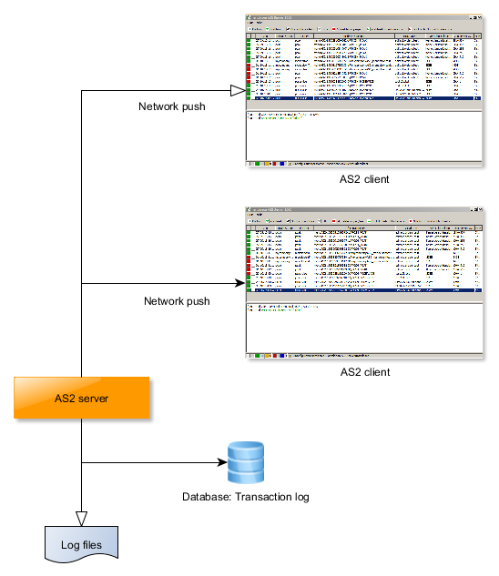
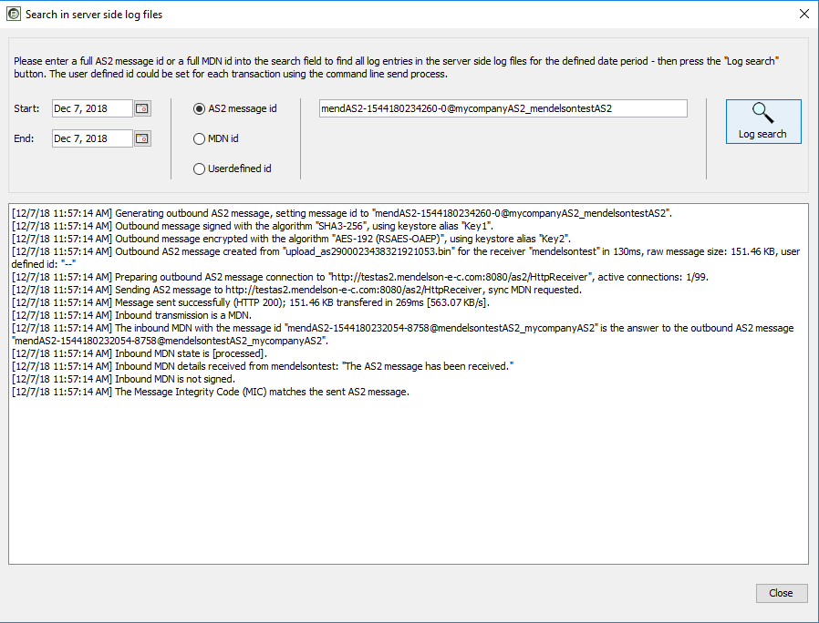
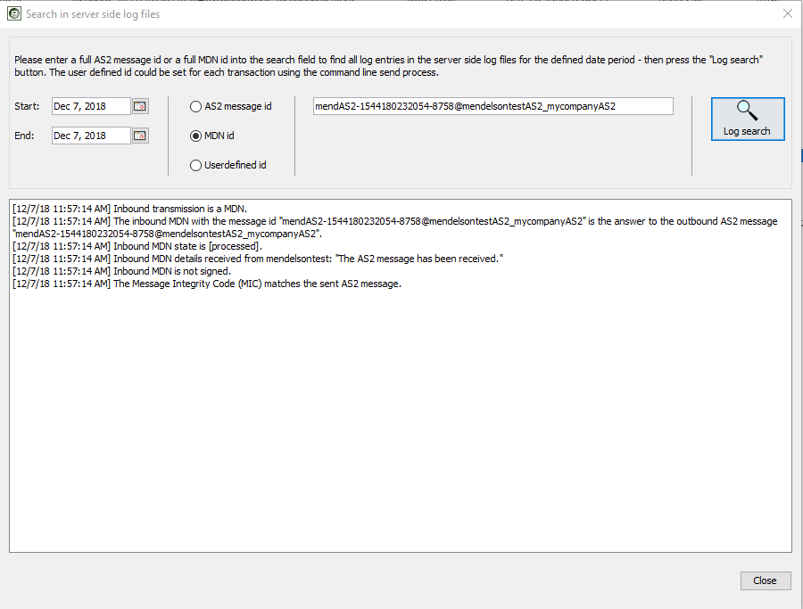
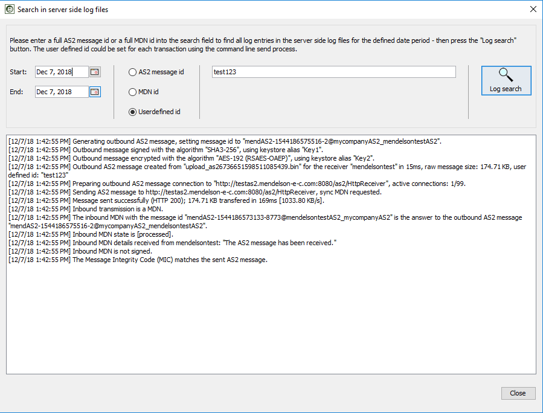

The mendelson AS2 server writes all activity to a log. This is a view of logging targets:

All AS2 clients that are connected to a mendelson AS2 server receive the server log via a push mechanism - TCP/IP. The push mechanism reaches all clients even if they are running on a remote machine. The push mechanism runs with low priotiy and you could remember a time shift if the server load is high.
There are 2 other targets for the log of the server. The first is a logfile that is written to "log/ccyymmdd/as2.log" on a daily base. The other one is the database that receives all necessary entries for each transaction. This allows to server the log entries for single transaction requests of the mendelson AS2 client later.
Transaction overview
Every operation of the as server ist stored in a log. This log is showed in the gui (transaction log).
For every transaction there are used the following icons to visualize the actual
state:
| Inbound message (initial direction) | |
| Outbound message (initial direction) | |
| Transaction finished successfully | |
| Transaction is still waiting, e.g. for a MDN | |
| Error in transaction |
Log per message
Every transaction contains of a message (AS2 message) and a receipt acknowledge (MDN, message delivery notification). The following icons are used:
| Inbound message or MDN | |
| Outbound message or MDN | |
| AS2 Message | |
| MDN (No processing error on remote station) | |
| MDN (Processing error on remote station) |
All operations on the single messages/MDN per transaction are stored. You could also see the raw data of all in/outbound messages in the GUI.
Every HTTP request to the mendelson AS2 is logged, you will find the log in the log directory ("CCYY_MM_DD.httprequest.log"). The log format is the NCSA Common log format, this allows to work with web log analysis software using this log. To disable the HTTP request log please edit the file jetty<n>/etc/jetty.xml, comment the sectino that is marked as request log section.
If you are loggin in into the mendelson AS2 using a client (user interface), the attempt is logged. You will find the log file in the log directory, called "client_server_session_0.log", "client_server_session_1.log" and "client_server_session_2.log". It's a cycling log, if the first log reaches the size of 1 MB the last log is deleted and a new one is started.
The mendelson AS2 server writes all log information that you see in the client
in the console to log files. These are sorted by date and are located in the
directory "log/YYYYMMDD". The log files can be viewed and searched
as text files in an editor. Each line contains additional information about
the time, the number of the transmission (if available) and the respective session
(if available).
Using the client, you can also search these files for specific message numbers,
MDN numbers oder the user defined processing id. If your partner has a question
about an older transaction that is no longer in your transaction overview, you
can use this information. However, the relevant transfer data is probably no
longer available at this point. The server logs are available until you manually
delete the corresponding directory "log/YYYYMMDD". Deleting them is
no problem for the search indexes - they are located in the subdirectory "log/YYYYMMDD/index"
each day and can be deleted at any time.

To search for a special AS2 message if you have the message id please enter this data in the format seen in the screenshot and press the the "Log search" button. You should see afterwards the log of this transmission in the defined time range.

To search for the data of a special MDN please have a look at a transaction
log of a special message log and get the MDN id from it. This selection will
search for all matching MDN data in the defined time range.

It's possible to queue send orders using the command line. In this case it is possible to define a userdefined id that marks the whole transmission in the log. To get this transmission later please put the user defined if into the search field, slect "user defined id" and hit the "Log search button".
| Last modified: $Date: 2/05/22 9:20 $ |